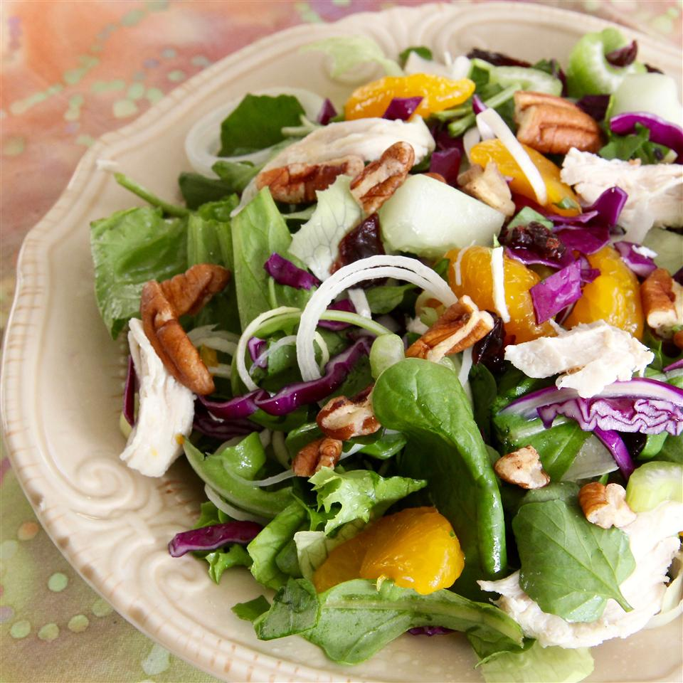

Chicken Chow Mein Salad

Tender chicken, crisp fresh veggies, and crunchy pecans combine to make this bright salad. Drizzle with your favorite store-bought or homemade Asian dressing for a complete meal.
Time
Prep:15 mins
Cook:15 mins
Total:30 mins
Ingredients
- 3 cups fresh spinach
- 1 (15 ounce) can mandarin oranges, drained
- 1 cup cubed cooked chicken
- 1 cup chopped red cabbage
- 2 stalks celery, thinly sliced
- ½ cucumber, peeled and diced
- ½ cup dried cranberries
- ½ cup chopped pecans
- ¼ cup thinly sliced leeks
Steps
-
Combine spinach, oranges, chicken, red cabbage, celery, cucumber, cranberries, pecans, and leeks together in a bowl.